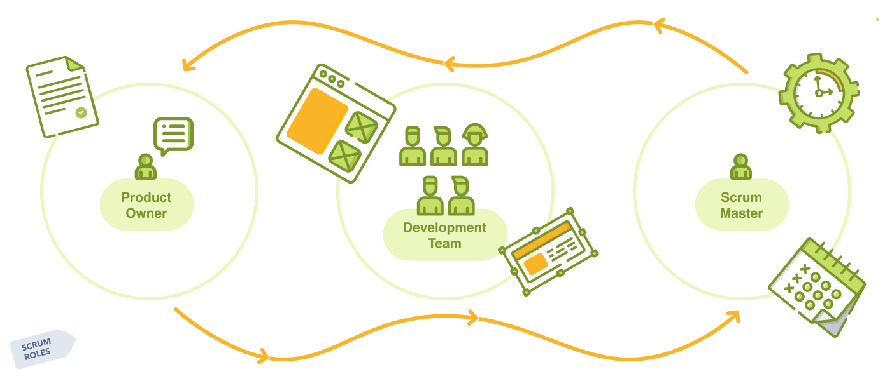

What is scrum???
a framework within which people can address complex adaptive problems, while productively and creatively delivering products of the highest possible value.
Where the scrum is used???
Scrum has been used extensively to...
- Research and identify technologies, and product capabilities
- Develop products and enhancements
- Release products and enhancements, as frequently as many times per day
- Sustain and renew products
Which companies use scrum?


How can it be used in the workflow?

Scrum roles

The Development Team


How to Use Scrum?

Scrum events


ADVANTAGE OF SCRUM
- Fast
- Lightweight
- The cost of managing is inexpensive
- Helps in improving the product quality
- Team members can be creative and get to know all the modules of the project.